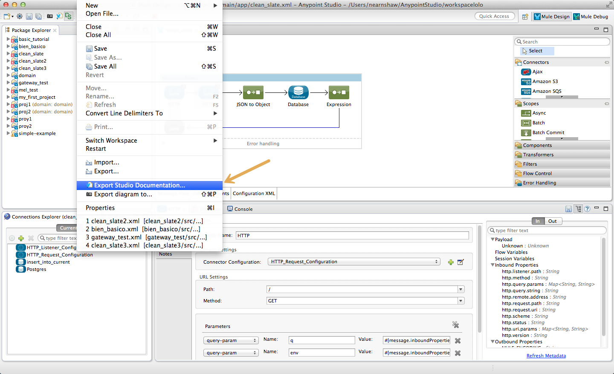
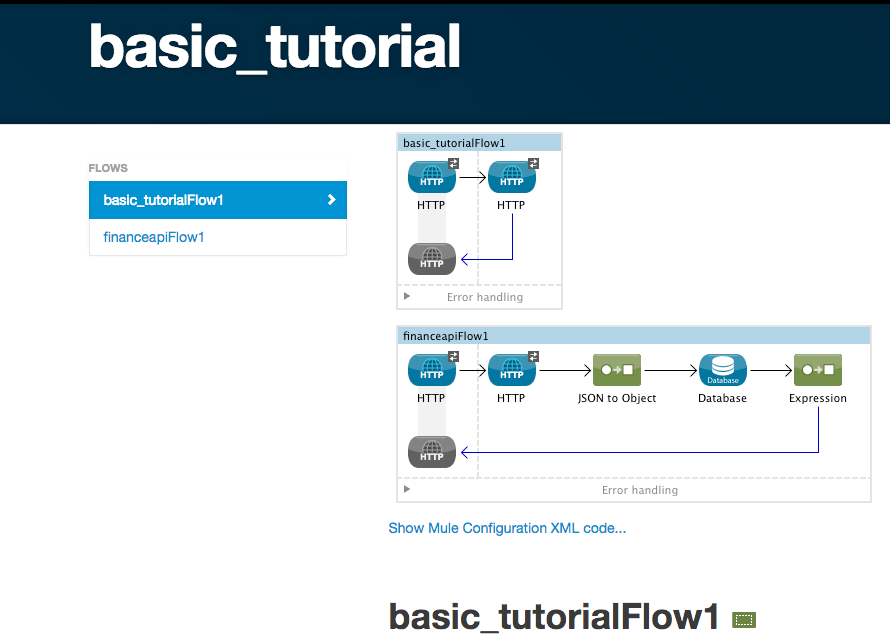

Importing and Exporting in Studio
Anypoint Studio supports the ability to import and export your projects or various project elements. The sections that follow outline the procedures to import or export information pertaining to your Studio projects. Because Studio is Eclipse-based, keep in mind that among the import/export options, there are way to import or export projects that are not tailored for Mule projects, and which are not recommended for use.
Importing Projects into Studio
To import a project, select File > Import… Studio presents several importing options.
| Option | Action |
|---|---|
Anypoint Studio generated Deployable Archive (.zip) |
Import a .zip file containing a new Mule project. |
Anypoint Studio Project from External Location |
Import a folder and its contents as a new Mule project. |
Maven-based Mule Project from pom.xml |
Import a .pom file with which Studio can build a new Mule project maintained with Maven. |
Mule ESB Configuration XML from External Location |
Import a configuration XML file into an existing Mule project. |
| When you import a project that was developed in an older version of Studio, the project may require some conversion, which Studio performs automatically. If you import a project developed in Anypoint Studio version 5.1.0 or older into a newer version of Anypoint Studio, then Studio asks you to perform an update to the project so that the Metadata Manager can handle the types and to show the types in your project. Note that performing this conversion might imply loosing previously defined run configurations. |
Importing a Mule Deployable Archive
When you export a Mule Deployable Archive from an instance of Studio, Studio stores the Studio-specific metadata in the archive so that it can be restored in another instance of Studio. Complete the following steps to import such a file into another instance of Anypoint Studio.
-
In the menu, select Import from the File menu.
-
In the Import wizard, click to expand the Mule folder, select Anypoint Studio generated Deployable Archive (.zip), then click Next.
-
In the Zip File field, click the ellipses (…) button to explore your local drive to find, then select, the Mule Deployable Archive file (i.e. the .
zipfile) you wish to import. -
Change the Project Name, if you wish, then use the drop-down to select a Server Runtime from those you have downloaded locally.
-
Click Finish. Studio loads the archive file, then displays the project in the Package Explorer under the project name you specified.
Exporting Projects from Studio
Right-click a project name in the Package Explorer, then select Export… Studio presents several exporting options.
| Option | Description |
|---|---|
Anypoint Studio Project to Mule Deployable Archive |
Export a Mule project to a .zip file. |
Mule extension Update Site |
Specific to DevKit connector extension projects, this option allows you to export the project to an update website. This option only appears if you have installed the DevKit plugin for Anypoint Studio. |
Exporting a Mule Deployable Archive
You can export a Mule Deployable Archive from a Studio project, it can later be deployed on mule ESB or imported into Anypoint Studio on a different machine. Complete the following steps to export such a file:
-
Right-click the Package Explorer pane, then select Export. Alternatively, select Export from the File menu.
-
In the Export wizard, click to expand the Mule folder, then select Anypoint Studio Project to Mule Deployable Archive (includes Studio metadata), then click Next.
-
In the Zip File field, click the ellipses (…) button to explore your local drive, then select the location to export your Mule Deployable Archive.
-
Select the Project you wish to export out of the list of existing projects in your workspace.
-
Click Finish. Studio will export your project as a .zip file to the selected folder.
Exporting a Studio Diagram
To easily share your project as a .png image that presents your flow’s diagram, use the Export Diagram feature.
-
In Studio, open the project for which you wish to export documentation.
-
Under the File menu, select Export diagram to…
-
Specify a location on your local drive to which you wish to export the project diagram, then click Save.
-
Studio saves a
.pngfile to the location you specified. The file contains the graphical representation of all the flows in your Studio project.
Exporting Studio Documentation
Anypoint Studio includes a feature that enables you to easily export all the documentation you have recorded for your project. Whenever you want to easily share your project with others outside the Studio environment, you can export the project’s documentation to print, email or share online. Studio’s auto-generated documentation includes:
-
A visual diagram of the flows in your application
-
The XML configuration which corresponds to each flow in your application
-
The text you entered in the Notes tab of any building block in your flow
Complete the following steps to export all documentation as an HTML file to a directory, or folder, on your local drive.
-
In Studio, open the project for which you wish to export documentation.
-
Under the File menu, select Export Studio Documentation…

-
In the Export Anypoint Studio Documentation wizard, specify a location on your local drive to which you wish to export the file, then click Generate Studio Documentation.
-
Studio generates, then saves the documentation for your project as an
index.htmlfile on your local drive. -
On your local drive, navigate to the location you specified to store the file, then double-click to open the
index.htmlfile in your default Web browser. See example below.
See Also
-
Explore a few example applications in Anypoint Studio.
-
Read about Importing a Maven Project into Studio.
-
Find out more about Enabling Maven Support for a Studio Project.
-
Read more about subtle but cool features hidden in Anypoint Studio in our MuleSoft Blog.